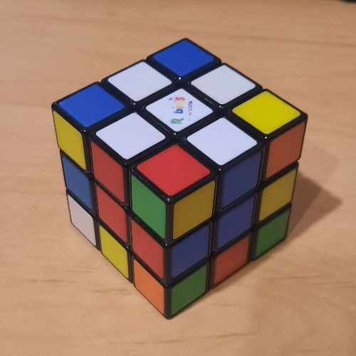
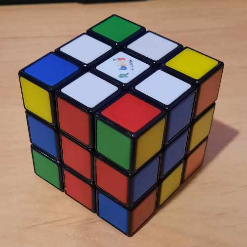
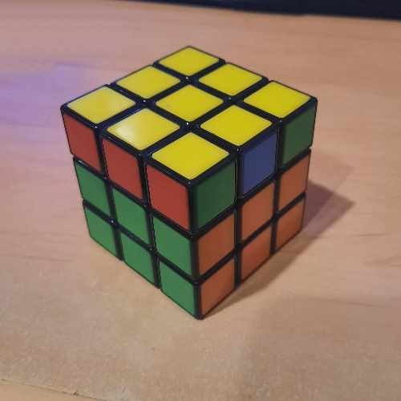

Stap 1 - Witte kruis
Eerst maak je het witte kruis.Hier bestaan algoritmes voor maar dit is een heel makkelijke stap.

Deze stap is makkelijk omdat er geen opgeloste stukken zijn om op te letten.
Zorg ervoor dat de witte vlakken op de juiste plaatst staan vergeleken met de tweede laag.
Stap 2 - Wit vlak
Draai de onderste laag zodat een van de witte hoeken zich direct onder de plek bevindt waar deze op de bovenste laag moet komen.Voer nu een van de drie algoritmen uit volgens de oriëntatie van het stuk
Let op de afbeelding hoe een rood/blauw/wit hoekje tussen de rode, blauwe en witte middenstukken loopt.

R' D' R
F D F'

F L D2 L' F'
Stap 3 - 2de laag
Nu beginnen we met de tweede laag, je gaat nu gebruik maken van 2 algoritmes.Welk algoritme je gebruikt hangt af van de positie van de vlakken die je juist wil zetten.
U' L' U L U F U' F'
U' L' U L U F U' F'
Stap 4 - Gele kruis
Nu gaan we beginnen met het gele kruis te maken.Bij deze stap moet je kijken hoe je de kubus draait.
Als je een hoekje hebt zet je deze linksboven.
Als je een streep hebt draai je deze horizontaal.


F R U R' U' F'
Stap 5 - Gele hoeken
Bij deze stap is de oriëntatie ook belangrijk.Houd de kubus zoals onderstaande fotos aangeven en voer het algoritme uit. Als er geen hoekstukken geel zijn moet je aan de linkerkant de dichtsbijzijnde hoek geel zijn:
Als er één hoekstuk geel is plaats je deze linksonder:
Als er meerdere hoekstukken geel zijn zorg je ervoor dat de je een gele linkerboven hebt op het voorvlak:
R U R' U R U2 R'
Stap 6 - Gele hoeken posities
Bij deze stap houd je de kubus zodat het vlak dat je WEG van je houd 2 hoeken heeft met dezelfde kleur.Let op dat alleen de hoeken matchen en niet het middenste blokje (zoals in de foto).
Dit herhaal je tot er 3 vakken zijn met 2 matchende hoeken en 1 lijn op de derde laag met volledig dezelfde kleur zoals in volgende foto:

R' F E' B2 R F' R' B2 R2 U'
Stap 7 - Gele kanten positie
Nu draai je de bovenste laag zodat er 1 volledig gekleurd vlak is (zoals rood in de foto).Je bent nu bijna klaar!
Draai de kant die volledig 1 kleur is naar achteren en voer dit algoritme uit:
F2 U L R' F2